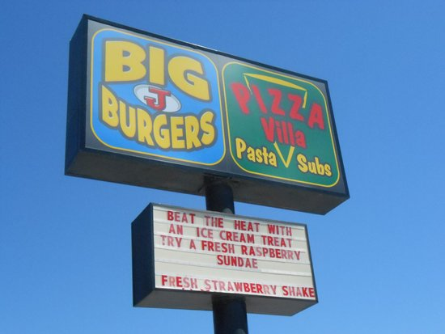

Preston Idaho

Weather Summary
Current: Sunny
Temperature: 45
Wind Chill:
Humidity: 15%
Wind Speed: 5 mph
| Sat | Sun | Mon | Tues | Wed |
|---|---|---|---|---|
 55"° F"
55"° F"
|
 48"° F"
48"° F"
|
 65"° F"
65"° F"
|
50"° F"
|
70"° F"
|
Rural Idaho Town Seeks to Turn Film's Cult Status Into Prosperity
The Big J Burger on State Street here could hardly be mistaken for a hip Hollywood club. But on Saturday afternoon, a 16-year-old wearing moon boots and a T-shirt with the slogan "Vote for Pedro" jumped out of his seat and began mixing it up on an improvised dance floor. With a boom box blaring behind him, he shimmied between the restaurant's tables to the 1999 dance hit "Canned Heat" while more than 100 people whooped and cheered. The dancer, Bryan Demke, from Fort Worth, was recreating a pivotal moment from the 2004 cult movie "Napoleon Dynamite" which was filmed in Preston. And the crowd attending the second annual Napoleon Dynamite festival loved it. "You rock!" shouted a young girl, raising her cellphone to take a picture. "I love you, Napoleon!" added another, blowing the dancer a kiss. "I thought the movie was stupid," said a smiling Craig Smith, who showed up with his brother Gordon and teenage son Kyle. "But that kid is killing me." More than 300 people traveled from as far away as California and Connecticut for the chance to embrace their own inner Napoleon. The movie, written by the husband and wife team of Jared and Jerusha Hess, was directed by Mr. Hess, a native of Preston who lives in Salt Lake City. Now Preston, with a population of 5,000 in the mostly rural county, hopes to capitalize on the film's cult status.